library(mlmRev)
library(effects)
mod0 = lm(normexam ~ standLRT + sex , data = Exam)
plot(allEffects(mod0))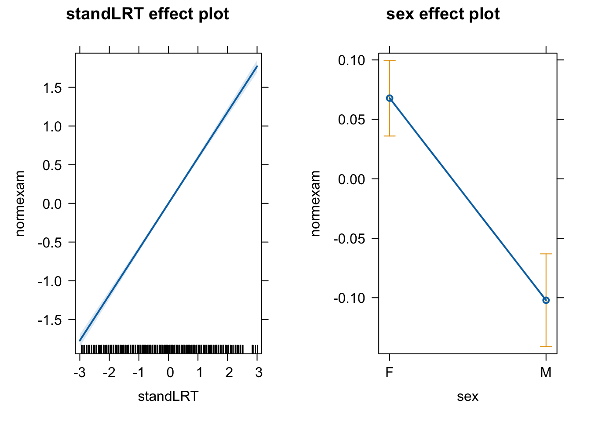
In this chapter, you will learn
Workflow steps (Section 1.1.2): step 2 (design and data), step 3 (a-priori model), step 5 (residual checks), step 6 (inference).
Prerequisites: the linear model (Chapter 2), ANOVA for the part on variance partitioning (Chapter 3).
Random effects are a very common addition to regression models that are used to account for grouping (categorical) variables such as subject, year, location. To explain the motivation for these models, as well as the basic syntax, we will use an example data set containing exam scores of 4,059 students from 65 schools in Inner London. This data set is located in the R package mlmRev.
If we analyze this with a simple LM, we see that reading ability and sex have the expected effects on the exam score.
library(mlmRev)
library(effects)
mod0 = lm(normexam ~ standLRT + sex , data = Exam)
plot(allEffects(mod0))
However, it is reasonable to assume that not all schools are equally good, which has two possible consequences:
We could solve this problem by fitting a different mean per school
mod0b = lm(normexam ~ standLRT + sex + school , data = Exam)however, with 65 schools this would cost 64 degrees of freedom, which is a high cost just for correcting the possibility of confounding and a minor residual problem.
The solution: Mixed / random effect models. In a mixed model, we assume (differently to a fixed effect model) that the variance between schools originates from a normal distribution. There are different interpretations of a random effect (more on this in Section 4.3.1), but one interpretation is to view the random effect as an additional error, so that such a mixed model has two levels of error:
First, the random effect, which is a normal “error” acting on an entire group of data points (in this case school).
And second, the residual error, which is a normal error per observation and acts on top of the random effect
Because of this hierarchical structure, these models are also called “multi-level models” or “hierarchical models”.
Because grouping naturally occurs in any type of experimental data (batches, blocks, observer, subject etc.), random and mixed effect models are the de-facto default for most experimental data! Naming conventions:
Most models that are used in practice are mixed models
The simplest random effect structure is the random intercept model.
Each random effect model has a fixed counterpart. For the random intercept model, this counterpart is the model we already saw in Section 4.1, with school as a fixed effect
mod0b = lm(normexam ~ standLRT + sex + school , data = Exam)The random intercept model is practically identical to the model above, except that it assumes that the school effects come from a common normal distribution. The model can be estimated with lme4::lmer
library(lme4)
mod1 = lmer(normexam ~ standLRT + sex + (1 | school), data = Exam)
summary(mod1)Linear mixed model fit by REML ['lmerMod']
Formula: normexam ~ standLRT + sex + (1 | school)
Data: Exam
REML criterion at convergence: 9346.6
Scaled residuals:
Min 1Q Median 3Q Max
-3.7120 -0.6314 0.0166 0.6855 3.2735
Random effects:
Groups Name Variance Std.Dev.
school (Intercept) 0.08986 0.2998
Residual 0.56252 0.7500
Number of obs: 4059, groups: school, 65
Fixed effects:
Estimate Std. Error t value
(Intercept) 0.07639 0.04202 1.818
standLRT 0.55947 0.01245 44.930
sexM -0.17136 0.03279 -5.226
Correlation of Fixed Effects:
(Intr) stnLRT
standLRT -0.013
sexM -0.337 0.061If we look at the outputs, you will probably note that the summary() function doesn’t return p-values. More on this in Section 4.5.1. Also, we see that the effects of the individual school are not explicitly mentioned. The summary only returns the mean effects over all schools, and the variance between schools (Random effects block: the school sd of 0.30 compares with the residual sd of 0.75, i.e. school accounts for about 14% of the variance that the fixed effects do not explain, the intraclass correlation). However, you can obtain the individual school effects via
ranef(mod1)Moreover, unlike the outputs we have seen before, the model also returns a correlation between fixed effect estimates. This, however, is simply a choice of the programmers, it has nothing to do with the random effect models - you could calculate the same output for the lm() via the function vcov().
Here is a visualization of the fitted effects for standLRT
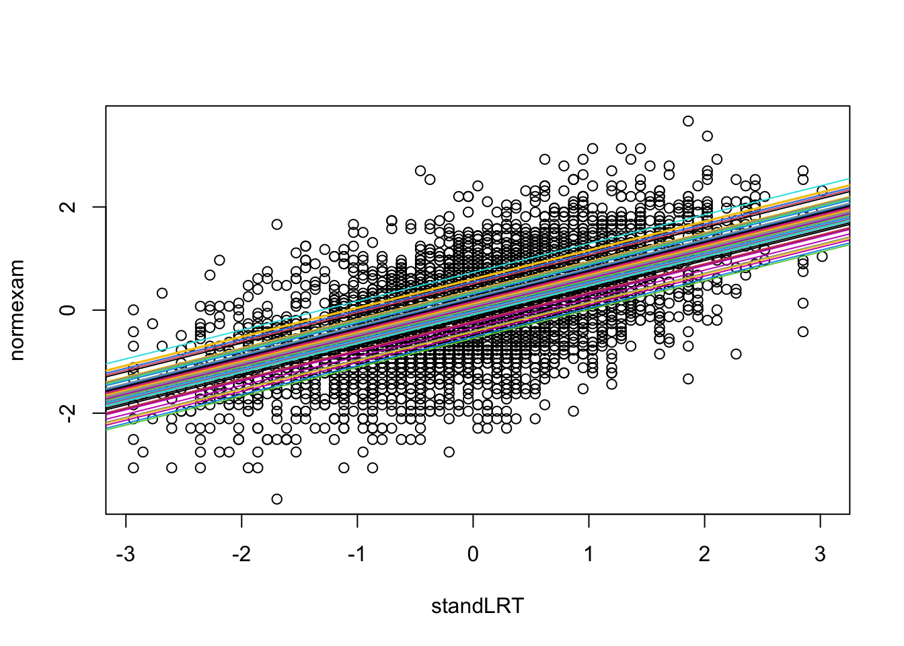
We can see that there is the same slope, but a different intercept per school.
The RE effectively “centers” the categorical predictor - unlike for the fixed effect model, where the intercept would be interpreted as the value for the first school, the intercept in the random effect model is the mean across all schools, and the REs measure the deviation of the individual school from the mean. It should be stressed, however, that this is a welcome consequence, but not the main motivation, for the RE structure.
equatiomatic package
We can use the equatiomatic package to print LaTeX code for the underlying equation of our random intercept model:
library(equatiomatic)
extract_eq(mod1)\[\begin{aligned} \operatorname{normexam}_{i} &\sim N \left(\alpha_{j[i]} + \beta_{1}(\operatorname{standLRT}) + \beta_{2}(\operatorname{sex}_{\operatorname{M}}), \sigma^2 \right) \\ \alpha_{j} &\sim N \left(\mu_{\alpha_{j}}, \sigma^2_{\alpha_{j}} \right) \text{, for school j = 1,} \dots \text{,J} \end{aligned}\]
The random effect structure should follow from the design of the study, not from the data. Ask yourself:
(1|plot)) accounts for this when the treatment varies between units: the effective sample size is then roughly the number of plots, not the number of plants. The same applies to any predictor that is constant within a unit, e.g. the elevation of a site that was surveyed repeatedly.y ~ treatment + (1|block)y ~ treatment + (1|plot)y ~ A * B + (1|block/mainplot) (/ means nested: main plots within blocks, see Tip 4.2)y ~ treatment * time + (1|site), possibly with a temporal correlation structure (Section 11.2)y ~ x + (1|site) + (1|observer) (crossed random effects, Tip 4.2)A second effect that we could imagine is that the effect of standLRT is different for each school. As a fixed effect model, we would express this, for example, as lm(normexam ~ standLRT*school + sex)
The random effect equivalent is called the random slope model. A random slope model assumes that each school also gets their own slope for a given parameter (per default we will always estimate slope and intercept, but you could overwrite this, not recommended!). Let’s do this for standLRT (you could of course fit random slopes on both predictors as well).
mod2 = lmer(normexam ~ standLRT + sex + (standLRT | school), data = Exam)
summary(mod2)Linear mixed model fit by REML ['lmerMod']
Formula: normexam ~ standLRT + sex + (standLRT | school)
Data: Exam
REML criterion at convergence: 9303.2
Scaled residuals:
Min 1Q Median 3Q Max
-3.8339 -0.6373 0.0245 0.6819 3.4500
Random effects:
Groups Name Variance Std.Dev. Corr
school (Intercept) 0.08795 0.2966
standLRT 0.01514 0.1230 0.53
Residual 0.55019 0.7417
Number of obs: 4059, groups: school, 65
Fixed effects:
Estimate Std. Error t value
(Intercept) 0.06389 0.04167 1.533
standLRT 0.55275 0.02016 27.420
sexM -0.17576 0.03228 -5.445
Correlation of Fixed Effects:
(Intr) stnLRT
standLRT 0.356
sexM -0.334 0.036Again, the difference to the fixed effect model is that in the random effect model, we assume that the variance between slopes comes from a normal distribution. The result is similar to the random intercept model, except that we have an additional variance term for the slopes, and a correlation between random intercepts and random slopes (Corr in the output).
equatiomatic package
We can use the equatiomatic package to print LaTeX code for the underlying equation of our random slope model:
library(equatiomatic)
extract_eq(mod2)\[\begin{aligned} \operatorname{normexam}_{i} &\sim N \left(\alpha_{j[i]} + \beta_{1j[i]}(\operatorname{standLRT}) + \beta_{2}(\operatorname{sex}_{\operatorname{M}}), \sigma^2 \right) \\ \left( \begin{array}{c} \begin{aligned} &\alpha_{j} \\ &\beta_{1j} \end{aligned} \end{array} \right) &\sim N \left( \left( \begin{array}{c} \begin{aligned} &\mu_{\alpha_{j}} \\ &\mu_{\beta_{1j}} \end{aligned} \end{array} \right) , \left( \begin{array}{cc} \sigma^2_{\alpha_{j}} & \rho_{\alpha_{j}\beta_{1j}} \\ \rho_{\beta_{1j}\alpha_{j}} & \sigma^2_{\beta_{1j}} \end{array} \right) \right) \text{, for school j = 1,} \dots \text{,J} \end{aligned}\]
Here a visualization of the results
with(Exam, {
randcoefI = ranef(mod2)$school[,1]
randcoefS = ranef(mod2)$school[,2]
fixedcoef = fixef(mod2)
plot(standLRT, normexam)
for(i in 1:65){
abline(a = fixedcoef[1] + randcoefI[i] , b = fixedcoef[2] + randcoefS[i], col = i)
}
})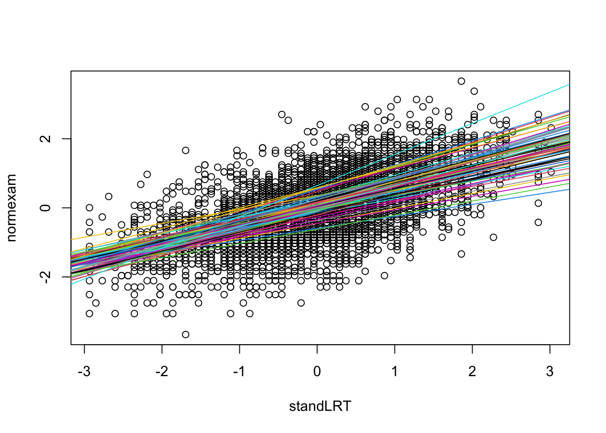
There are a large number of packages to fit mixed models in R. The main packages that you use, because they are most user-friendly and stable, are lme4 and glmmTMB. They share more or less the same syntax for random effects.
(1 | group).(0 + fixedEffect | group).(fixedEffect | group).(fixedEffect || group), identical to(1 | group) + (0 + fixedEffect | group) (for a numeric fixedEffect; for a factor, lme4 still estimates the correlations between its levels).(1 | group / subgroup). If groups are labeled A, B, C, … and subgroups 1, 2, 3, …, this will create labels A1, A2 ,B1, B2, so that you effectively group in subgroups. Useful for the many experimental people that do not label subgroups uniquely, but otherwise no statistical difference to a normal (crossed) random effect.(1 | group1) + (1 | group2).There is often confusion about the behavior and meaning of crossed vs. nested REs. From the statistical / mathematical side, there is no difference between them, there are just REs. Crossed vs. nested is a shorthand to tell you how the data was coded.
Let’s look at the Exam data, for example. If you run
table(Exam$student, Exam$school)you will see that the student ID = 1 appears in many schools. Clearly, this cannot be the same student, the reason is that each school uses their own ID. If you would fit a crossed RE, as in
m1 = lmer(normexam ~ standLRT + sex + (1 | school) + (1 |student), data = Exam)
summary(m1)you would fit a common effect for each student with ID = 1. This, however, doesn’t make sense, there is no connection between these students. Thus, you should fit
m2 = lmer(normexam ~ standLRT + sex + (1 | school/student), data = Exam)
summary(m2)Compare the number of RE groups in the summary: in m1, you have 650 students. In m2, you have 4055 student:school levels for the RE. Thus, the nested syntax makes sure that students with the same ID in different schools are treated as different individuals.
You could fit the same mod by changing the coding of student. To do this, we create a new variable, combining school and student into a unique ID
Exam$uniqueStudent = as.factor(paste(Exam$school, "-", Exam$student))
m3 = lmer(normexam ~ standLRT + sex + (1 | school) + (1|uniqueStudent), data = Exam)
summary(m3)If you check the summary of m3, now we also have 4055 levels for uniqueStudent, and the results are identical to the nested model version.
Caution: in the Exam data, almost every student appears only once (4055 student:school levels for 4059 observations), so a student-level RE cannot be separated from the residual error; the fit is singular (sd of student:school = 0). The example only illustrates the coding. Nested REs make sense if the lower level is replicated.
nlme is a classic package for fitting (nonlinear) mixed effect models. I would argue that it is largely superseded by lme4 and glmmTMB, but it still offers a few special tricks that are not available in either lme4 or glmmTMB. A linear mixed model with random intercept in nlme looks like this
nlme::lme(Resp ~ Predictor, random = ~1|Group, data = data)If you want to use GAMs, there is basically only mgcv (or brms, if you’re willing to go Bayesian).
# Group must be a factor
mgcv::gam(Resp ~ Predictor + s(Group, bs = 're'), data = data)brms is a very interesting package that allows you to estimate mixed models via Bayesian Inference with STAN.
brm_mod <- brms::brm(Resp ~ Predictor + (1|Group),
data = data) # add e.g. family = poisson for GLMMs, see the chapter on GLMs
summary(brm_mod)A complete brms GLMM is shown in the owls exercise (Caution 9.2). For an introduction to Bayesian mixed models, see the chapter on linear and linear mixed models in Hartig (2024).
Frequentist linear mixed models are usually estimated with REML = restricted maximum likelihood, rather than with classical MLE. Most packages allow you to switch between REML and MLE. The motivation for REML is that for limited data (non-asymptotics), the MLE for variance components of the model are typically negatively biased, because the uncertainty of the fixed effects is not properly accounted for. If you go through the mathematics, you can make an analogy to the bias-corrected sampling variance (Bates, 2011).
REML maximizes the likelihood of linear combinations of the data that do not depend on the fixed effects (equivalently, the likelihood after integrating out the fixed effects). This accounts for the df used by the fixed effects, like dividing by n-p instead of n when estimating a variance in a linear model.
Most packages offer an option to switch between REML and ML estimation of the model. In lme4, this is done via
m = lmer(normexam ~ standLRT + sex + (1 | school), data = Exam)
m = lmer(normexam ~ standLRT + sex + (1 | school), data = Exam, REML = F)Regarding when to use what, use the following rule of thumb:
Per default, use REML
Switch to ML (REML = FALSE) if you compare models with different fixed effects, or a mixed model with a model without random effects, via LRTs or AIC. For comparing RE structures with identical fixed effects, REML is fine.
Later in this chapter (Section 4.5.3), we will talk about model selection via LRTs and AIC. Because those depend on the likelihood, it is generally recommended to switch from REML to ML in this case. The reason is that the REML likelihood refers to linear combinations of the data that do not depend on the fixed effects, i.e. to different data when the fixed-effect structure changes, so REML likelihoods are not comparable between models with different fixed effects. I would recommend sticking to this, although I have to say that I have always wondered how big this problem is, compared to the other df problems associated to mixed models (see Section 4.5.1).
What do the random effects mean, and why should we use them?
The classical interpretation of the random intercept is that they model a group-structured residual error, i.e. they are like residuals, but for an entire group. However, this view breaks down a bit for a random slope model.
Another view this is that REs terms absorb group-structured variation in model parameters. This view works for random intercept and slope models. So, our main model fits the grand mean, and the RE models variation in the parameters, which is assumed to be normally distributed.
A third view of RE models is that they are regularized fixed effect models. What does that mean? Note again that, conceptually, every random effect model corresponds to a fixed effect model. For a random intercept model, this would be
lmer(y ~ x + (1|group)) => lm(y ~ x + group)and for the random slope, it would be
lmer(y ~ x + (x|group)) => lm(y ~ x * group)So, alternatively to a mixed model, we could always fit a fixed effect model, and that would also take care of the variation in groups. Of course, the output of the two models differs, but that’s just what people programmed. The real difference, however, is that by making the assumption that the random effects come from a normal distribution, we are imposing a constraint on the estimates, which creates a shrinkage on the fitted REs (see Section 4.3.2).
To understand shrinkage, note that whatever the fitted sd of the normal distribution underlying the RE, as long as it is finite, it will always be more likely that the RE estimate is at zero (i.e. the grand mean) than at 1 or 2 sd. This means that RE estimates are biased towards the grand mean.
We can visualize the effect by comparing estimates of a fixed to a random effect model
mf = lm(normexam ~ 0 + school, data = Exam)
mr = lmer(normexam ~ (1 | school), data = Exam)
ef = coef(mf)
er = ranef(mr)$school$`(Intercept)`
plot(ef, er, xlab = "fixed", ylab = "random")
abline(0,1)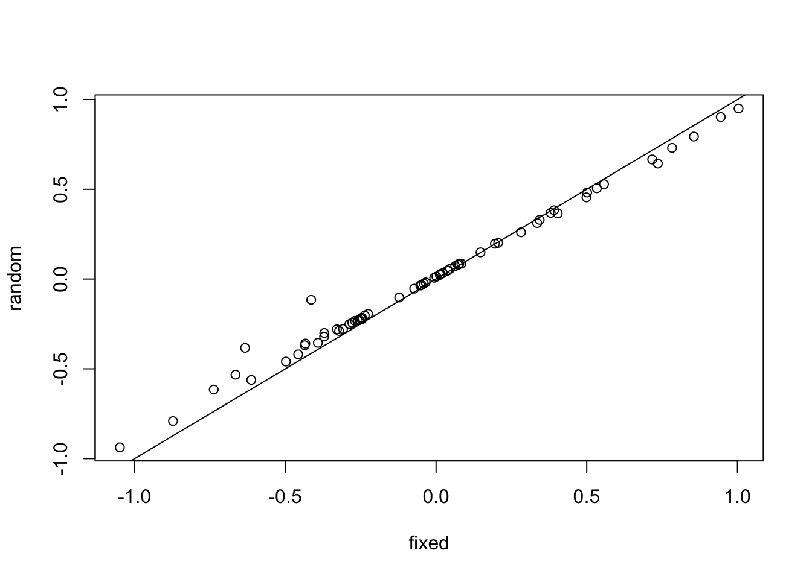
The plot shows that random effect estimates are biased towards the grand mean, i.e. positive values are lower than in the LM, and negative values are higher than in the LM. This is called shrinkage.
The shrinkage imposed by the RE is equivalent to an L2 (ridge) regression (see Section 8.2.3), or a normally distributed Bayesian prior. You can see this by considering that the log likelihood of a normal distribution is equivalent to a quadratic penalty for deviations from the mean. The difference is that the strength of the penalty, controlled by the RE sd, is estimated. For that reason, the RE shrinkage is also referred to as an example of “adaptive shrinkage”.
This RE shrinkage is useful in many situations, beyond describing a group-structured error in the data. A common use is that by using a random slope model, parameter estimates for groups with few data points are drawn towards the grand mean and thus informed by the estimates of the other groups. For example, if we have data for common and rare species, and we are interested in the density dependence of the species, we could fit a random slope for density per species. Consider the plantHeight case study we did in the exercise in the chapter on linear regression (Caution 2.2). We saw that, even after re-leveling the predictor, not all interactions could be estimated, because some factor levels had only one observation.
library(EcoData)
plantHeight$growthform2 = relevel(as.factor(plantHeight$growthform), "Herb")
plantHeight$sTemp = scale(plantHeight$temp)
fit <- lm(loght ~ sTemp * growthform2 , data = plantHeight)
summary(fit)If you run the same thing as a random slope model, you will see that we can estimate a random intercept and slope for each growth form, even those that have only one observation
fit <- lmer(loght ~ sTemp + (sTemp | growthform2) , data = plantHeight)
ranef(fit)$growthform2
(Intercept) sTemp
Herb -0.70060787 0.07032554
Fern -0.07771756 0.01484118
Herb/Shrub -0.18519919 0.03351554
Shrub -0.17681675 0.11176808
Shrub/Tree 0.29044226 -0.04361958
Tree 0.84989911 -0.18683076
with conditional variances for "growthform2" The reason is that rare growth forms will be constrained by the RE, while common growth forms with a lot of data can overrule the normal distribution imposed by the random slope and get their own estimate. In this picture, the random effect imposes an adaptive shrinkage, similar to a ridge shrinkage estimator, with the shrinkage strength controlled by the standard deviation of the random effect. An alternative view is that the RE variance acts as a prior distribution on the slope. Of course, the estimates are biased towards the grand mean, so if you want to interpret these estimates that is a cost that you have to take into account.
So, to finalize this discussion: there are essentially two main differences between a random vs. fixed effect model
While point 1 is more a choice about how to report results (in principle, we could also calculate the grand mean for fixed effect group estimates), the second point (higher power) is a clear advantage in many cases, in particular if you don’t care about the bias on the REs. Therefore, the rule of thumb for REs is:
If you have a categorical variable, and you’re not interested in its estimates, model it as a RE
If you want to get unbiased estimates of the categorical variable (or its interactions), use a fixed effect
A common question is how many levels a grouping variable needs to be modeled as a random effect. Because the variance of a random effect is estimated from its levels, a common rule of thumb is to use at least about 5-10 levels, and to model a grouping variable with fewer levels as a fixed effect (Bolker, 2015; Harrison et al., 2018). With few levels, the variance estimate is indeed imprecise and biased towards zero, and singular fits are common. However, if you are interested in the population-level effect of a predictor rather than in the individual levels, simulations by Oberpriller, Souza Leite and Pichler (2022) suggest that a mixed model can still give reliable tests, provided that singular fits are handled. They recommend to start with a mixed model regardless of the number of levels. If the effect of the predictor varies between groups, start with a correlated random slope and intercept; after a singular fit, remove the correlation (||, see Section 4.4.1), and if the fit is still singular, switch to a fixed effect. In their simulations, singular mixed models had inflated type I error rates, similar to a model that omits the grouping variable, and omitting random slopes that are present in the data also inflated the type I error. In short, with few levels both options can be defended, and more levels are clearly better, so when planning a study, aim for more than the minimum.
The choice between a random and a fixed effect based on whether you are interested in the estimates is just a rule of thumb; in data-poor situations, it is common to use random slope models and interpret the estimates as well. In this case, we are using the RE to optimize the bias-variance trade-off (see the section on the bias-variance trade-off in the model selection chapter, Section 8.1).
As residual checks for an LMM, you should first of all check for everything that you would check in an LM, i.e. you would expect that the residual distribution is iid normal. On top of that, you should check the REs for:
I will show all of those using the example
mod1 = lmer(normexam ~ standLRT + sex + (1 | school), data = Exam)
summary(mod1)Linear mixed model fit by REML ['lmerMod']
Formula: normexam ~ standLRT + sex + (1 | school)
Data: Exam
REML criterion at convergence: 9346.6
Scaled residuals:
Min 1Q Median 3Q Max
-3.7120 -0.6314 0.0166 0.6855 3.2735
Random effects:
Groups Name Variance Std.Dev.
school (Intercept) 0.08986 0.2998
Residual 0.56252 0.7500
Number of obs: 4059, groups: school, 65
Fixed effects:
Estimate Std. Error t value
(Intercept) 0.07639 0.04202 1.818
standLRT 0.55947 0.01245 44.930
sexM -0.17136 0.03279 -5.226
Correlation of Fixed Effects:
(Intr) stnLRT
standLRT -0.013
sexM -0.337 0.061If there is a convergence problem, you should usually get a warning. Other signs of convergence problems may be RE estimates that are zero, CIs that are extremely large, or strong correlations in the correlation matrix of the predictors that is reported by summary(). Here, we have no problems, but we’ll see examples of this as we go on.
There are different types of convergence problems that you can encounter:
lmerControl(optimizer = "bobyqa", optCtrl = list(maxfun = 1e5)) (glmerControl() for glmer) to change the optimizer to bobyqa and possibly increase the number of iterations, e.g. lmer(..., control = lmerControl(optimizer = "bobyqa", optCtrl = list(maxfun = 1e5))).Unfortunately, lme4 plots only provide res ~ fitted as default
plot(mod1)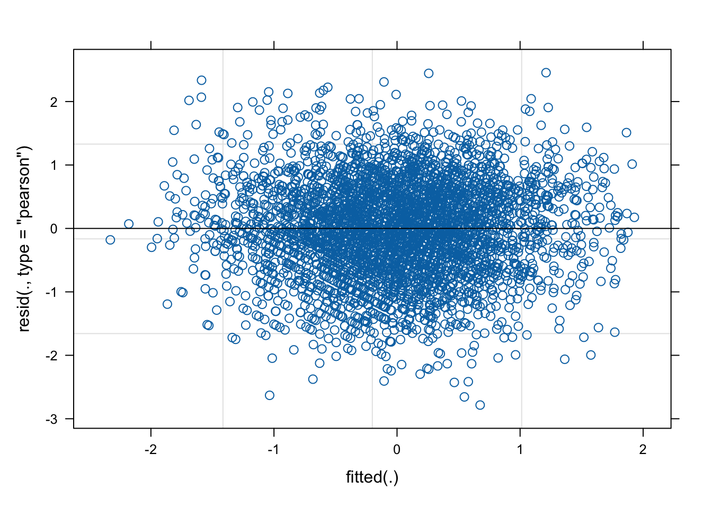
For a qqplot, you have to calculate the residuals by hand
qqnorm(residuals(mod1))
qqline(residuals(mod1))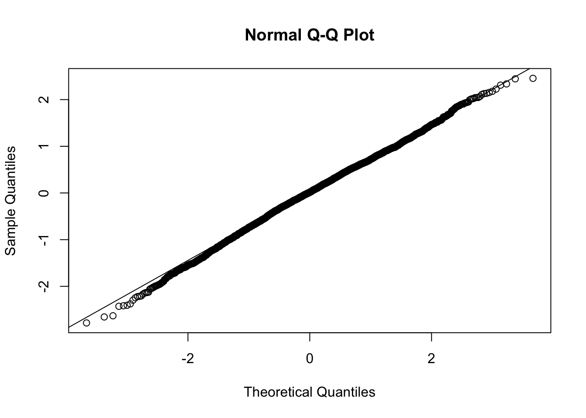
Of course, any time you do a qqnorm plot, you could also run a shapiro.test to get a p-value for the deviation from normality (interpret visually: such tests are over-sensitive for large n and underpowered for few groups). You can also use the DHARMa plots
library(DHARMa)
res <- simulateResiduals(mod1, plot = T)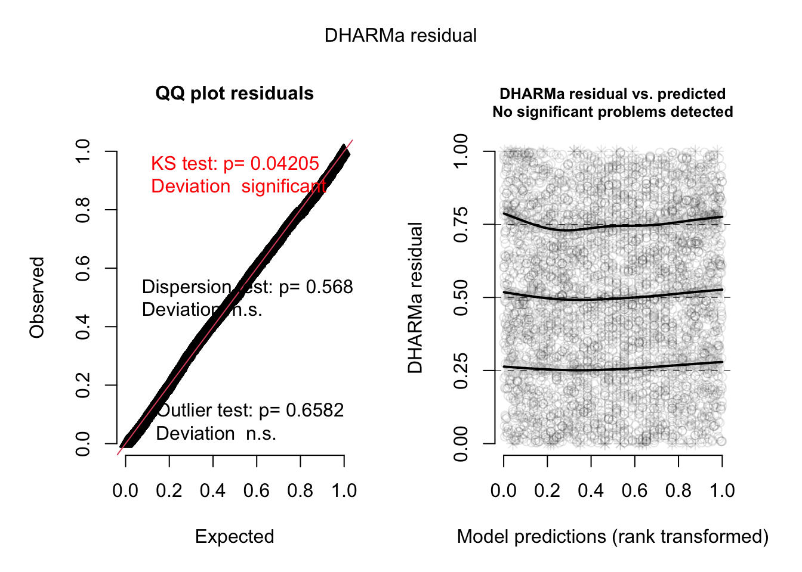
Both plots look fine. Of course, we should also check residuals against predictors. In DHARMa, we can do this via
par(mfrow = c(1,2))
plotResiduals(res, Exam$standLRT)
plotResiduals(res, Exam$sex)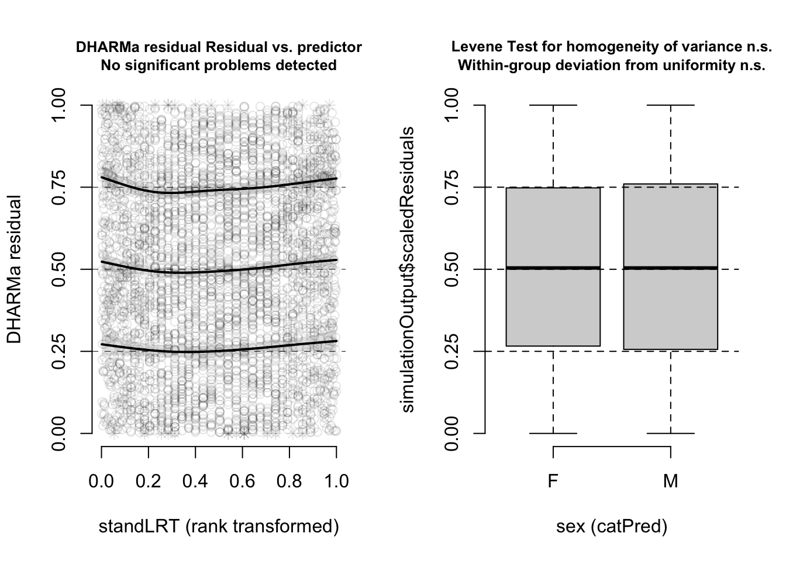
For mixed models, there are three ways to make predictions, which are easy to confuse:
re.form = NULL in lme4, the default).re.form = NA or re.form = ~0). This is the prediction for an “average” group.In a linear mixed model, unconditional and marginal predictions are identical, because the random effects average to zero. With a nonlinear link function (GLMMs), they differ (see Section 9.5.1). Note that these terms are not used consistently in the literature and in R packages; e.g. the “marginal R2” of mixed models (Section 4.5.4) is based on the fixed effects only.
When you predict with a random effect model, you can do conditional or unconditional predictions (see Tip 4.3). The difference is that conditional predictions include the REs, while unconditional predictions only include the fixed effects.
predict(mod1, re.form = NULL) # conditional, default
predict(mod1, re.form = ~0) # unconditionalThis also makes a difference for the residual calculations: in principle, you could calculate residuals with respect to both predictions. In lme4, however, residuals() always returns conditional residuals (observed minus conditional predictions). It has no re.form argument, and additional arguments are silently ignored, so residuals(mod1, re.form = ~0) would still give conditional residuals. Unconditional residuals have to be calculated by hand with predict():
residuals(mod1) # conditional
Exam$normexam - predict(mod1, re.form = NULL) # conditional, same as residuals(mod1)
Exam$normexam - predict(mod1, re.form = ~0) # unconditionalDHARMa offers both: since version 0.5.0, simulateResiduals() simulates conditional on the fitted random effects by default, and with simulateREs = "unconditional" it re-simulates them. Both have advantages and disadvantages:
I prefer to look at this visually. You can also run a shapiro.test() to check if you should consider the pattern at all, but interpret it visually: such tests are over-sensitive for large n and underpowered for few groups.
x = ranef(mod1)
qqnorm(x$school$`(Intercept)`)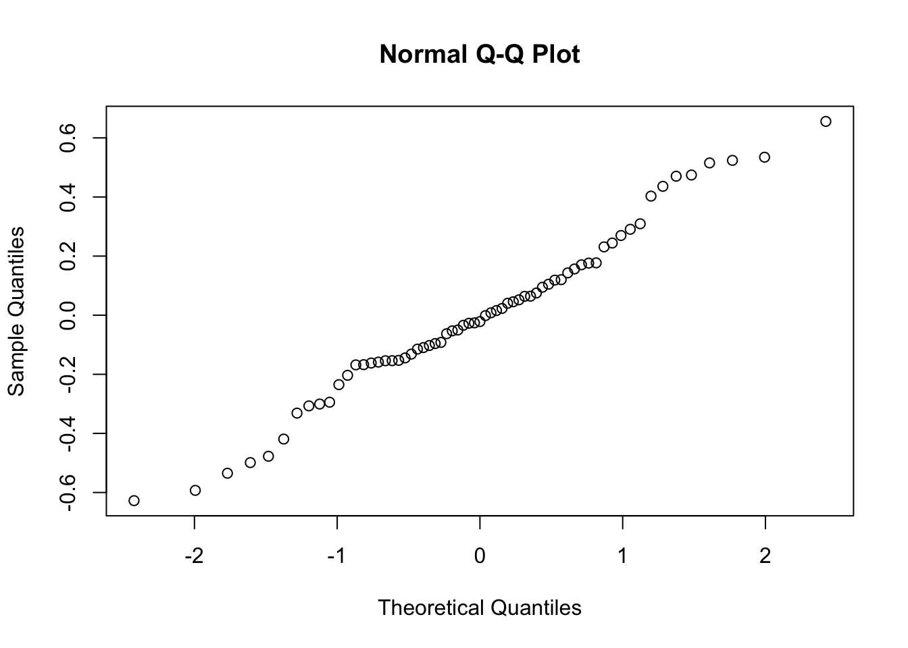
Question is how bad can this be? (Neuhaus, McCulloch and Boylan, 2013) report some simulation results that suggest that fixed effect slopes (bias, coverage) are relatively robust to misspecification in the RE distribution, which is reassuring.
As mentioned in Tip 4.4, REs can sometimes absorb misfit of the fixed effect structure. It can therefore be useful to check if there is a correlation with the predictors, especially if you only check conditional residuals. Example:
y = aggregate(standLRT ~ school, FUN = mean, data = Exam)
plot(x$school$`(Intercept)` ~ y$standLRT)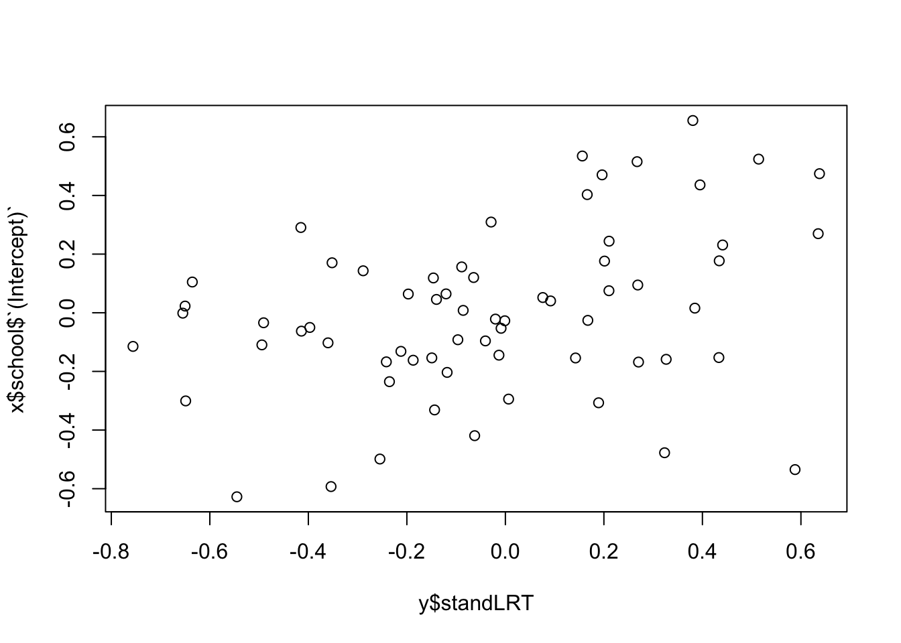
A trend of the school intercepts with the school mean of a predictor means that the RE absorbs an effect that should be in the fixed part. Here, there is a weak positive trend (correlation about 0.35): schools with a higher average reading score tend to have higher intercepts. A common remedy is to add the school mean of the predictor as an additional fixed effect (in Exam it already exists as schavg), which separates the within-school from the between-school effect.
lme4 has an excellent plot syntax to plot residuals per grouping factor. Check out the help of plot.merMod. The following plot shows residuals ~ fitted for each school
plot(mod1, resid(., scaled=TRUE) ~ standLRT | school, abline = 0)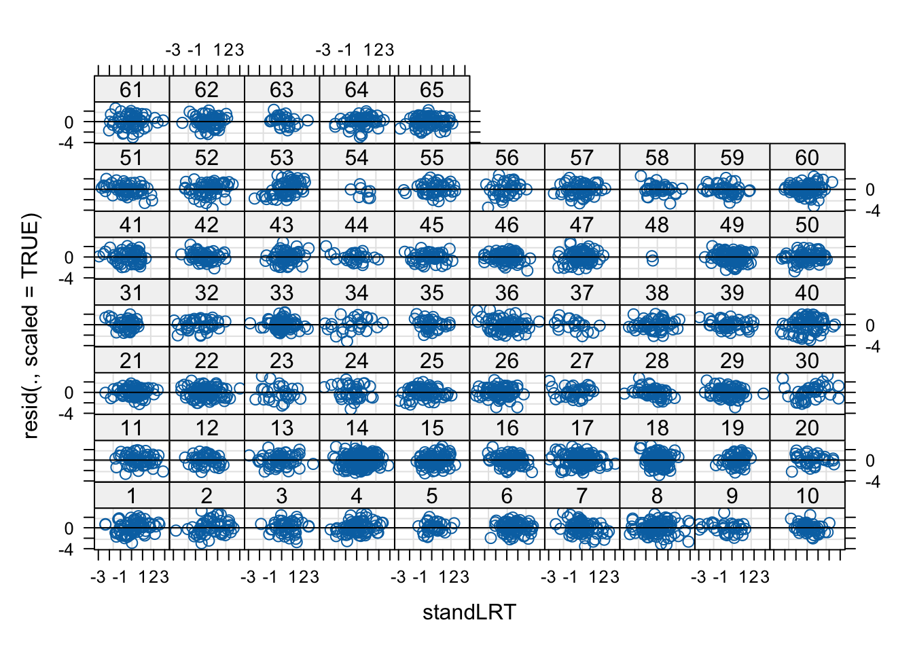
Looks still good to me, but if we think we see a pattern here, we should introduce a random slope.
Specifying mixed models is quite simple, but their practical application raises several issues (degrees of freedom, model selection, ANOVA, predictions). The following table gives an overview of how to obtain tests and confidence intervals for mixed models; the subsections of this section explain the details. The columns for glmer and glmmTMB become relevant for generalized linear mixed models (Section 9.5).
| Question | lmer |
glmer |
glmmTMB |
Section |
|---|---|---|---|---|
| Test a single fixed effect | t-test with approximate df (summary() after loading lmerTest) |
Wald z-test (summary()) |
Wald z-test (summary()) |
Section 4.5.1 |
| Test a term with several df (e.g. a factor) | F-test with approximate df (anova() after loading lmerTest, type III); alternatives in Section 4.5.4 |
car::Anova() (Wald \(\chi^2\)) |
car::Anova() (Wald \(\chi^2\)) |
Section 4.5.4 |
| Compare groups or treatments (contrasts) | emmeans() with pairs() or contrast() |
emmeans() |
emmeans() |
Note 3.1 |
| Compare nested models with different fixed effects | likelihood ratio test, anova(m0, m1) (refits REML models with ML) |
anova(m0, m1) |
anova(m0, m1) |
Section 4.5.3.1 |
| Test a random effect | simulated LRT (DHARMa::simulateLRT()); lmerTest::ranova() is approximate and conservative |
simulated LRT | simulated LRT | Section 4.5.3.3 |
| CIs for fixed effects | confint() (profile); for few groups (fewer than about 10-20), parametric bootstrap (confint() of a bootMer() result) |
confint() (profile; method = "Wald" is faster) |
confint() (Wald; method = "profile" is also available) |
Section 4.5.1 |
| CIs for random effect standard deviations | confint() (profile) |
confint() (profile) |
confint() (Wald, listed as Std.Dev.) |
Section 4.5.1 |
| CIs for predictions | parametric bootstrap with bootMer() (the prediction function also needs re.form = NA); approximate: predict(..., se.fit = TRUE) (lme4 2.0 or later) |
as for lmer |
predict(..., se.fit = TRUE, re.form = NA); compute the CI on the link scale and back-transform |
Section 4.5.2 |
All of these are approximations, because the degrees of freedom of a mixed model are not clearly defined (Section 4.5.1). With few groups (as a rule of thumb, fewer than about 10-20), Wald tests and also likelihood ratio tests with the standard \(\chi^2\) distribution give p-values for fixed effects that are too small. For linear mixed models, the approximate degrees of freedom of lmerTest (Satterthwaite) or Kenward-Roger (car::Anova(m, test.statistic = "F")) are then more reliable; for GLMMs, use a parametric bootstrap or a simulated LRT (DHARMa::simulateLRT(), pbkrtest::PBmodcomp()), and profile instead of Wald CIs. In contrast, a standard likelihood ratio test for a random effect is conservative, because the null hypothesis (variance = 0) lies at the boundary of the parameter space, which is another reason to use the simulated LRT. Finally, note that anova() after loading lmerTest gives type III tests, while car::Anova() gives type II tests by default; with interactions, they test different hypotheses (Section 3.2.3, Caution 4.2), so say which one you report.
Possibly the most central problem is: How many parameters does a random effect model have?
Why is it so important to know how many parameters a model has? The answer is that what seems like a very minor point is needed in all the mathematics for calculating p-values, AIC, LRTs and all that, so without knowing the complexity of the model, the mathematics that is used in lm() breaks down.
We can make some guesses about the complexity of an LMM by looking at its fixed effect version counterparts:
mFix0 = lm(normexam ~ standLRT + sex , data = Exam)
mFix0$rank # 3 parameters.
mRE = lmer(normexam ~ standLRT + sex + (1 | school), data = Exam)
# No idea how many parameters.
mFixSchool = lm(normexam ~ standLRT + sex + school, data = Exam)
mFixSchool$rank # 67 parameters.So, we see that the fixed effect model without school has 3 parameters, and with school 67. It is reasonable to assume that the complexity of the mixed model is somewhere in-between, because it fits the same effects as mFixSchool, but they are constrained by the normal distribution.
The width of this normal distribution is controlled by the estimated variance of the random effect. For a high variance, the normal is very wide, and the mixed model is nearly as complex as mFixSchool; but for a low variance, the normal is very narrow, and the mixed model it is only as complex as mFix0. The shrinkage plot in Section 4.3.2 shows this directly: the more the random estimates are pulled towards the grand mean, the fewer effective parameters the model uses.
Technically, the mixed model mRE estimates the same 65 school effects as the fixed effect model mFixSchool, plus one more parameter, the standard deviation of the random effects. Could it thus ever be more flexible than mFixSchool? The answer is no - the RE standard deviation is what is technically called a hyperparameter. It is not an effect that is estimated, but rather a parameter that controls the freedom of the estimated effects, so the effective number of parameters of the mixed model can never exceed that of mFixSchool.
Because of these issues, lmer by default does not return p-values (for an overview of the options, see Table 4.1). The help advises you to use bootstrapping to generate valid confidence intervals and p-values on parameters. This is possible indeed, but very cumbersome.
However, you can calculate p-values based on approximate degrees of freedom via the lmerTest package, which also corrects ANOVA for random effects, but not AIC.
library(lmerTest)
m2 = lmer(normexam ~ standLRT + sex + (1 | school), data = Exam)
summary(m2)Linear mixed model fit by REML. t-tests use Satterthwaite's method [
lmerModLmerTest]
Formula: normexam ~ standLRT + sex + (1 | school)
Data: Exam
REML criterion at convergence: 9346.6
Scaled residuals:
Min 1Q Median 3Q Max
-3.7120 -0.6314 0.0166 0.6855 3.2735
Random effects:
Groups Name Variance Std.Dev.
school (Intercept) 0.08986 0.2998
Residual 0.56252 0.7500
Number of obs: 4059, groups: school, 65
Fixed effects:
Estimate Std. Error df t value Pr(>|t|)
(Intercept) 0.07639 0.04202 75.29533 1.818 0.073 .
standLRT 0.55947 0.01245 4049.94324 44.930 < 2e-16 ***
sexM -0.17136 0.03279 3043.55845 -5.226 1.85e-07 ***
---
Signif. codes: 0 '***' 0.001 '**' 0.01 '*' 0.05 '.' 0.1 ' ' 1
Correlation of Fixed Effects:
(Intr) stnLRT
standLRT -0.013
sexM -0.337 0.061Confidence intervals for the fixed effects and the random effect standard deviations (.sig01 is the standard deviation between schools, .sigma the residual standard deviation) can be calculated by profiling the likelihood:
confint(m2) 2.5 % 97.5 %
.sig01 0.245031246 0.3645283
.sigma 0.733686033 0.7665906
(Intercept) -0.006506716 0.1589860
standLRT 0.535096653 0.5839836
sexM -0.235603141 -0.1071413(Refit with REML = FALSE only if you want to run LRTs or AIC comparisons on fixed effects.)
Related to the interpretation of an RE is the question whether the REs should be included when you make predictions or calculate other outputs of the model, e.g. residuals.
Unconditional predictions = predictions without the RE, i.e. the population-level curve from the fixed effects (see Tip 4.3)
Conditional predictions = predictions with RE
In some, but unfortunately not all packages, the predict function can be adjusted. In lme4, this is via the option re.form, which is available in the predict and simulate function. Let look again at a simple random intercept model
m = lmer(normexam ~ standLRT + sex + (1 | school), data = Exam)To generate predictions from this model, use the following syntax.
predict(m, re.form = NULL) # include all random effects
predict(m, re.form = ~0) # include no random effects, identical re.form = NA
predict(m, re.form = ~ (1|school)) # condition ONLY on 1|schoolThe third option is in this case identical to the first, but if we would add more REs to the model, it would differ.
Do you know how to get the correct help function for an S3 object? Concretely, how do we get the help for predicting with a fitted mixed model? ?predict alone will not work, because this will call the general help. What you need is predict.CLASSNAME, where CLASSNAME is the class of the object on which you want to work on. In R, you get the class via
class(m)[1] "lmerModLmerTest"
attr(,"package")
[1] "lmerTest"is(m)[1] "lmerModLmerTest" "lmerMod" "merMod" So, a model fitted with lme4 is of class lmerMod (with lmerTest attached, as here, lmerModLmerTest). The predict method is not defined for this class itself, but for its parent class merMod (see is(m)), which is why the help page is called predict.merMod:
?predict.merModA second issue with predictions is their uncertainty. Because of the degrees of freedom problem (Section 4.5.1), lme4 calculated no standard errors on predictions for a long time; since version 2.0, predict(..., se.fit = TRUE) gives approximate standard errors (with a warning). The more reliable option is the parametric bootstrap, which is implemented in lme4
For this, we generate first a function that generates predictions
pred <- function(m) predict(m,re.form = NA)Note regarding this function that
We could add the argument newdata if we wanted to predict to newdata
Here, we have re.form = NA, which is identical to re.form = ~0, meaning that we make unconditional predictions, i.e. the population-level curve from the fixed effects
In the call to bootMer() below, re.form = NA (the default) has another role: it is passed to the simulation of the new data, and NA means that new random effects are drawn for each simulated data set (see ?bootMer)
Second, we now bootstrap this prediction to generate an uncertainty of the prediction
boot <- bootMer(m, pred, nsim = 100, re.form = NA)
# visualize results
plot(boot)
# get 95% confidence interval
confint(boot)For model selection, the degrees of freedom problem (Section 4.5.1) means that normal model selection techniques such as AIC or naive LRTs don’t work on the random effect structure, because they don’t count the correct degrees of freedom.
The easy part is the selection on the fixed effect structure - if we can assume that by changing the fixed effect structure, the flexibility of the REs doesn’t change a lot (you would see this by looking at the RE sd), we can use all standard model selection methods (with all their caveats) as before on the fixed effect structure. All I will say about model selection on standard models applies also here: good for predictions, rarely a good idea if your goal is causal inference (see Section 8.3.1 and the chapter on causal inference, Chapter 7).
As discussed in Section 4.2.4, LMMs are per default fit with REML, whose likelihoods are not comparable between models with different fixed effects. When comparing models with different fixed effects via LRTs or AIC, refit the models with ML; anova() does this automatically (it prints “refitting model(s) with ML”), AIC() and logLik() do not. See also (Verbyla, 2019)
When changing the RE structure, you should not use standard AIC or LRTs, because of the df problem. For that reason, I would generally recommend to fix the RE structure a priori and keep selection on REs to a minimum.
What structure you should choose may depend on the experimental setting and scientific / biological expectations, but a base recipe for a limited number of data is:
m1 <- lmer(y ~ x + (1|group))
plot(m1,
resid(., scaled=TRUE) ~ fitted(.) | group,
abline = 0)I would deviate from this recipe and also add random slopes a priori when I either have sufficient power to support the random slopes without problems, or have good a priori reasons to expect random slopes.
If you want to formally select on the variance structure, the best way is to use a simulated likelihood-ratio test (LRT), based on the parametric bootstrap, which we introduced in Section 3.2.2. In such a test, we make the same assumptions as in a standard LRT, which is:
However, unlike in the standard LRT, where we assumed that the test statistic is Chi2 distributed, we use the parametric bootstrap (see Section 2.12.2) to generate new data under H0, fit M0 and M1 to this simulated data, and thus generate a null distribution of the LR for these two models.
Simulated LRTs for mixed models are implemented in a number of packages. To my knowledge, one of the most general functions is DHARMa::simulateLRT. Here an example, in which we test if a random intercept is needed. Note that we fit the mixed model with ML (REML = FALSE), because its likelihood is compared to the likelihood of a model without random effects (see Section 4.2.4):
set.seed(123)
dat <- DHARMa::createData(sampleSize = 200, randomEffectVariance = 1, family = gaussian())
library(lme4)
m1 = lmer(observedResponse ~ Environment1 + (1|group), data = dat, REML = FALSE)
m0 = lm(observedResponse ~ Environment1 , data = dat)
DHARMa::simulateLRT(m0, m1)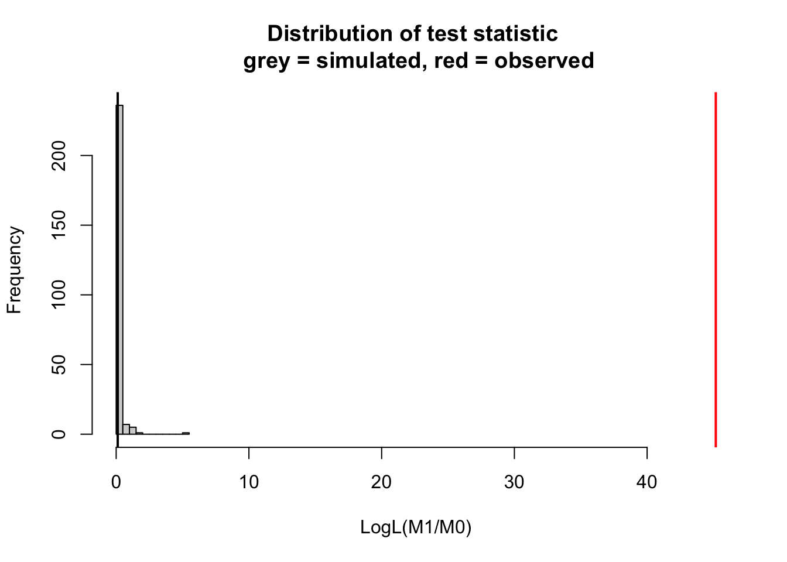
DHARMa simulated LRT
data: m0: m0 m1: m1
LogL(M1/M0) = 45.174, p-value < 2.2e-16
alternative hypothesis: M1 describes the data better than M0If you want to understand the method in more detail, you can expand the hand-coded example of a simulated LRT below:
We use the models from the previous example - first, let’s look at the observed LR
observedLR = logLik(m1) - logLik(m0)The log LR of m1 (the RE model) over m0 is 45, meaning that seeing the observed data under m1 is exp(45) times more likely than under m0.
As noted, the complex model will always fit better, so it is expected that the data is more likely under M1, but is the increase significant? In this case, the LR is actually so large that we actually wouldn’t need to test. A rough rule of thumb is that you need a log LR of 2 for each df that you add, and here we have an RE with 10 groups, so even if we counted 1 df for each RE group, this should be easily significant. Nevertheless, let’s do the formal test, and this time by hand.
First, we write a function that creates new LRs under H0, by simulating new data from the fitted M0, and re-fitting M0/M1 to this data, and return the LR.
resampledParameters = function(){
newData = dat
newData$observedResponse = unlist(simulate(m0))
mNew0 = lm(observedResponse ~ Environment1, data = newData)
mNew1 = lmer(observedResponse ~ Environment1 + (1|group), data = newData, REML = FALSE)
return(logLik(mNew1) - logLik(mNew0))
}Now, let’s generate the null distribution. There will be a lot of warnings which you can usually ignore. The reason is that we simulate the data under H0, i.e. with no RE, and thus the mixed model estimates the RE variance to zero, which creates a warning.
nullDistribution = replicate(500, resampledParameters())If we plot the null distribution, we see that if the data would really not have an RE, we would expect an increase of likelihood for the more complicated model of not more than 4 or so.
hist(nullDistribution, breaks = 50, main = "Null distribution log(L(M1) / L(M0))")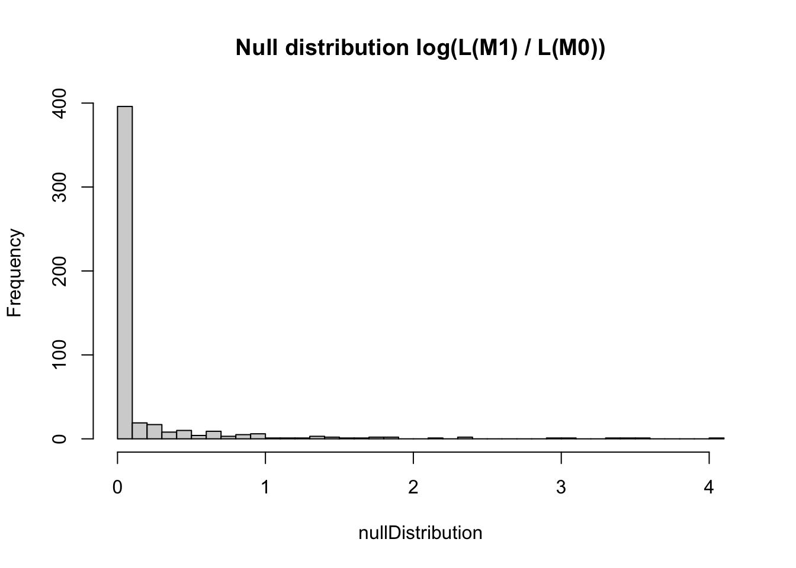
However, what we actually observe is an increase of 45. I rescaled the x axis to make this visible.
hist(nullDistribution, breaks = 50, main = "Null distribution log(L(M1) / L(M0))", xlim = c(-5,50))
abline(v = observedLR, col = "red")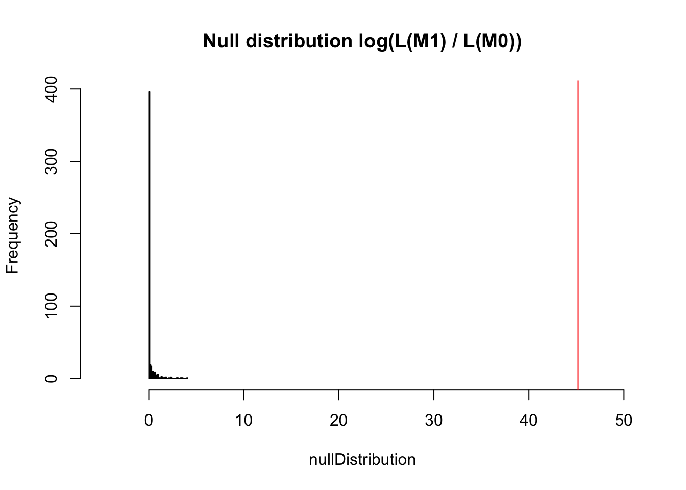
No simulated LR exceeded the observed one, so p < 1/501 (about 0.002); a Monte Carlo p-value is never exactly 0.
mean(nullDistribution > observedLR)[1] 0Also variance partitioning in mixed models is a bit tricky, as (see the type I/II/III ANOVA discussion in Section 3.2.3) fixed and random components of the model are in some way “correlated”.
First of all, note that you have to be careful because as most S3 functions in R, the anova function is overloaded, so depending on the class of the model object, different functions will be used.
Let’s look at this for the case of a lmer model.
library(faraway)
library(lme4)
detach("package:lmerTest", unload=TRUE)
data(irrigation)
fit <- lmer(yield ~ irrigation + variety + (1|field), data = irrigation)
summary(fit)Linear mixed model fit by REML ['lmerMod']
Formula: yield ~ irrigation + variety + (1 | field)
Data: irrigation
REML criterion at convergence: 54.8
Scaled residuals:
Min 1Q Median 3Q Max
-0.8751 -0.5615 -0.1090 0.6889 1.0931
Random effects:
Groups Name Variance Std.Dev.
field (Intercept) 16.541 4.067
Residual 1.426 1.194
Number of obs: 16, groups: field, 8
Fixed effects:
Estimate Std. Error t value
(Intercept) 38.425 2.952 13.015
irrigationi2 1.000 4.154 0.241
irrigationi3 0.600 4.154 0.144
irrigationi4 4.100 4.154 0.987
varietyv2 0.750 0.597 1.256
Correlation of Fixed Effects:
(Intr) irrgt2 irrgt3 irrgt4
irrigation2 -0.703
irrigation3 -0.703 0.500
irrigation4 -0.703 0.500 0.500
varietyv2 -0.101 0.000 0.000 0.000If you run the anova command on this, it will call anova.merMod from package lme4, which runs a sequential (type I) ANOVA.
anova(fit)Analysis of Variance Table
npar Sum Sq Mean Sq F value
irrigation 3 1.6605 0.5535 0.3882
variety 1 2.2500 2.2500 1.5782See discussions about the exact calculations of this function here.
If you load lmerTest, the anova command will be overwritten by anova.lmerTest, which performs, as displayed in the output, a type III Anova with df estimated by Satterthwaite’s method.
library(lmerTest)
fit <- lmer(yield ~ irrigation + variety + (1|field), data = irrigation)
anova(fit)Type III Analysis of Variance Table with Satterthwaite's method
Sum Sq Mean Sq NumDF DenDF F value Pr(>F)
irrigation 1.6605 0.5535 3 4 0.3882 0.7685
variety 2.2500 2.2500 1 7 1.5782 0.2493Arguably, this method is preferable over the base lme4 method if you are interested in the p-values of the model terms.
The considerations from the chapter on ANOVA about contrasts and centering (Section 3.2.4, Caution 3.1) also apply to mixed models, with one difference between packages: the type III ANOVA of lmerTest does not depend on how factors are coded (it constructs the type III hypotheses independently of the contrasts used), but car::Anova(fit, type = "III") does, exactly as for an lm. Both still depend on centering: if a numeric predictor is part of an interaction, the main effects of the other variables are tested at the value 0 of this predictor. emmeans::joint_tests() also works for mixed models and avoids both problems. When reporting, state which method was used for the degrees of freedom (Satterthwaite as above, or Kenward-Roger).
Note also that in mixed models, the coding determines what random slopes for factors mean. If you use uncorrelated random effects (the || syntax), the coding even changes the fitted model, as the assumption of zero correlations depends on how the factor is coded.
Another common question in ANOVA for mixed models is how much R2 is explained by fixed vs. random effects. Philosophically, the main point of discussion here is: Do you want to count the random effect variance as “explained”, or “residual”. In any case, a common approach is the marginal and conditional R2 proposed by Nakagawa and Schielzeth (2013) and Nakagawa, Johnson and Schielzeth (2017), which is implemented in the MuMIn package. With this, we can run
library(MuMIn)
r.squaredGLMM(fit) R2m R2c
[1,] 0.1360522 0.9314427Interpretation
It is important to note that this is a description of the fitted model, not necessarily valid inference - the reason is that if you add a lot of REs, you will tend to get a lot of variance explained by the RE structure. If you want to correct for this, one option is to calculate R2 values under a cross-validation.
An interesting variation of using mixed models is to use them as an alternative to ANOVA to understand how much variation in a response variable is explained by different factor variables (for applications in ecology, see (Leite et al., 2024)). Consider the following example of simulated data, where I created 3 categorical variables with an increasing number of levels per variable, and essentially a “normal” distribution of effects for the different levels of those. In other words, these are exactly the assumptions of a mixed model, where we have 4 normally distributed errors: 3 for the 3 groups (with different group sizes) and 1 residual error, all with the same sd of 1.
set.seed(123)
k1 = 4
k2 = 8
k3 = 20
rep = 5
RE1 = rnorm(k1)
RE2 = rnorm(k2)
RE3 = rnorm(k3)
dat = expand.grid(1:k1,1:k2,1:k3, 1:rep)
dat$y = RE1[dat$Var1] + RE2[dat$Var2] + RE3[dat$Var3] + rnorm(nrow(dat))
dat[1:4] <- lapply(dat[1:4], as.factor)To see how much variation is created by each of the factors, the standard way would be to fit an ANOVA (see the chapter on ANOVA, Chapter 3, if you don’t recall the details). As the design is perfectly balanced and orthogonal, it doesn’t matter if we fit type I,II,III ANOVA:
summary(aov(y ~ Var1+Var2+Var3, data = dat)) Df Sum Sq Mean Sq F value Pr(>F)
Var1 3 2116 705.3 713.0 <2e-16 ***
Var2 7 2726 389.5 393.8 <2e-16 ***
Var3 19 2650 139.5 141.0 <2e-16 ***
Residuals 3170 3136 1.0
---
Signif. codes: 0 '***' 0.001 '**' 0.01 '*' 0.05 '.' 0.1 ' ' 1# car::Anova(lm(y ~ Var1+Var2+Var3, data = dat)) # identicalThe alternative would be to fit a random effect model with the 3 grouping variables as random intercepts
library(lme4)
library(lmerTest)
fit <- lmer(y ~ (1|Var1) + (1|Var2) + (1|Var3), data = dat)After having fit the model, we can look at the random effect table
x = VarCorr(fit)
x Groups Name Std.Dev.
Var3 (Intercept) 0.93045
Var2 (Intercept) 0.98556
Var1 (Intercept) 0.93829
Residual 0.99458 Which pretty much already looks like an ANOVA table. If you standardize the RE variances to sum of all variance, you obtain the so-called variance partition coefficients (VPCs)., which are often seen as an alternative to ANOVA
x = data.frame(x)
setNames(x$vcov / sum(x$vcov), x$grp) Var3 Var2 Var1 Residual
0.2335613 0.2620508 0.2375173 0.2668706 Note that the results of a VPC can be very different from an ANOVA. In an ANOVA, you look at the variance explained in the response. In VPCs, you compare the variance between different groups in the data. This will tend to be similar to ANOVA if observations are balanced in groups, but it can be very different if they are not. In this behavior, VPCs resemble standardized effect sizes (which can also differ in ranking variables from ANOVA if the distribution of the predictor is very skewed). I would therefore recommend to interpret VPCs as “effect sizes of categorical predictors”, rather than as ANOVA shares.
We can get (note: approximate) p-values on the terms by running a random effect anova
lmerTest::ranova(fit)ANOVA-like table for random-effects: Single term deletions
Model:
y ~ 1 + (1 | Var1) + (1 | Var2) + (1 | Var3)
npar logLik AIC LRT Df Pr(>Chisq)
<none> 5 -4603.6 9217.3
(1 | Var1) 4 -5410.4 10828.7 1613.5 1 < 2.2e-16 ***
(1 | Var2) 4 -5573.1 11154.2 1938.9 1 < 2.2e-16 ***
(1 | Var3) 4 -5523.9 11055.8 1840.6 1 < 2.2e-16 ***
---
Signif. codes: 0 '***' 0.001 '**' 0.01 '*' 0.05 '.' 0.1 ' ' 1The quality of the p-value approximation is somewhat unclear. Alternatively, you could run parametric-bootstrap (simulated) LRTs (see Section 4.5.3.3). In a frequentist framework, it will be difficult to obtain CIs on the VPCs, unless you bootstrap. Alternatively, you could run this in a Bayesian framework via brms.
As a final step, let’s test out if we test for factors that did not have an effect in the model. In this case, I create three two-way interactions as well as another RE on the factor replicate, which did not have an effect on the response
dat$Var12 = factor(paste(dat$Var1,dat$Var2))
dat$Var23 = factor(paste(dat$Var2,dat$Var3))
dat$Var13 = factor(paste(dat$Var1,dat$Var3))
summary(aov(y ~ (Var1+Var2+Var3)^2 +Var4, data = dat)) Df Sum Sq Mean Sq F value Pr(>F)
Var1 3 2115.8 705.3 712.057 <2e-16 ***
Var2 7 2726.5 389.5 393.253 <2e-16 ***
Var3 19 2650.5 139.5 140.844 <2e-16 ***
Var4 4 2.4 0.6 0.601 0.6623
Var1:Var2 21 33.1 1.6 1.592 0.0424 *
Var1:Var3 57 56.3 1.0 0.997 0.4814
Var2:Var3 133 117.1 0.9 0.889 0.8115
Residuals 2955 2926.8 1.0
---
Signif. codes: 0 '***' 0.001 '**' 0.01 '*' 0.05 '.' 0.1 ' ' 1fit <- lmer(y ~ (1|Var1) + (1|Var2) + (1|Var3) + (1|Var12) + (1|Var23) + (1|Var13) + (1|Var4) , data = dat)
VarCorr(fit) Groups Name Std.Dev.
Var23 (Intercept) 0.0000000
Var13 (Intercept) 0.0080901
Var12 (Intercept) 0.0769380
Var3 (Intercept) 0.9304234
Var2 (Intercept) 0.9848136
Var4 (Intercept) 0.0000000
Var1 (Intercept) 0.9379012
Residual 0.9925864lmerTest::ranova(fit)ANOVA-like table for random-effects: Single term deletions
Model:
y ~ 1 + (1 | Var1) + (1 | Var2) + (1 | Var3) + (1 | Var12) + (1 | Var23) + (1 | Var13) + (1 | Var4)
npar logLik AIC LRT Df Pr(>Chisq)
<none> 9 -4602.3 9222.5
(1 | Var1) 8 -4641.6 9299.2 78.627 1 < 2e-16 ***
(1 | Var2) 8 -4640.9 9297.8 77.216 1 < 2e-16 ***
(1 | Var3) 8 -4691.5 9399.0 178.407 1 < 2e-16 ***
(1 | Var12) 8 -4603.6 9223.3 2.711 1 0.09965 .
(1 | Var23) 8 -4602.3 9220.5 0.000 1 0.98880
(1 | Var13) 8 -4602.3 9220.5 0.000 1 0.98879
(1 | Var4) 8 -4602.3 9220.5 0.000 1 0.99916
---
Signif. codes: 0 '***' 0.001 '**' 0.01 '*' 0.05 '.' 0.1 ' ' 1In this case, both methods attribute some variation to the null terms, but also both methods realize that these terms are (mostly) n.s., which is reassuring! The term Var12 has a p-value of about 0.04 in the ANOVA and 0.10 in ranova(). This is expected: the LRT of ranova() is conservative for variance terms, because the null value 0 lies on the boundary of the parameter space (Section 4.5); halving its p-value is a rough correction. Note that I have suppressed boundary / convergence warnings in the fit of the mixed model, which should be of course solved in a real application.
So, when and why should you prefer VPC over ANOVA?
A considerable advantage of the VPCs over ANOVA is that they compute orders of magnitudes faster than a standard anova in large datasets with many group levels.
Disadvantages are measures of uncertainty (p-values, CIs) may be problematic to obtain. Moreover, you should also note that the estimation of the VPCs depends on the ability of the mixed models to estimate the correct RE variance. To obtain unbiased estimates of the RE variance is notoriously difficult, as evidenced by the different methods to estimate the RE variances in different packages, as well as the REML / ML estimation debate (see Section 4.2.4). The issues are usually not a primary concern, because we usually do not interpret the RE variances directly, but they are only indirectly used to account for the group level effects. In the VPC analysis, however, they are directly used, and thus particular care should be taken, e.g., in checking if RE distributions are indeed normal etc. (see, e.g., Section 4.4.3).
(1 | group / subgroup); otherwise different groups are merged.lmer() reports no p-values because of the df problem; use lmerTest (approximate df) or the parametric bootstrap.We use a dataset on bee colonies infected by the American Foulbrood (AFB) disease. The study measured spores of the bacterium “Paenibacillus larvae” (variable Spobee) that infect honeybee larvae, as well as the degree of the infection of the colony (integer: 0 (none), 1 (minor), 2 (moderate), 3 (major)).
The scientific question is if colonies with a higher degree of infection also exhibit more spores, i.e. if infection predicts spores. Additional variables that you can consider are BeesN (Bees per hive) and Hive (ID of the respective hive, 1 - 24). The data has 72 samples from 24 hives (3 per hive); the degree of infection and the number of bees are measured per hive, and only 4 of the 24 hives are infected.
library(lme4)
fit <- lmer(log(Spobee + 1) ~ Infection + BeesN + (1|Hive), data = bees)
summary(fit)Linear mixed model fit by REML. t-tests use Satterthwaite's method [
lmerModLmerTest]
Formula: log(Spobee + 1) ~ Infection + BeesN + (1 | Hive)
Data: bees
REML criterion at convergence: 260.8
Scaled residuals:
Min 1Q Median 3Q Max
-2.27939 -0.45413 0.09209 0.52159 1.64023
Random effects:
Groups Name Variance Std.Dev.
Hive (Intercept) 4.8463 2.2014
Residual 0.6033 0.7767
Number of obs: 72, groups: Hive, 24
Fixed effects:
Estimate Std. Error df t value Pr(>|t|)
(Intercept) 5.583e+00 1.907e+00 2.100e+01 2.927 0.00805 **
Infection 2.663e+00 5.528e-01 2.100e+01 4.818 9.22e-05 ***
BeesN -2.068e-05 2.558e-05 2.100e+01 -0.808 0.42804
---
Signif. codes: 0 '***' 0.001 '**' 0.01 '*' 0.05 '.' 0.1 ' ' 1
Correlation of Fixed Effects:
(Intr) Infctn
Infection -0.476
BeesN -0.966 0.398
fit warnings:
Some predictor variables are on very different scales: consider rescaling.
You may also use (g)lmerControl(autoscale = TRUE) to improve numerical stability.The log spore count increases with the degree of infection (about +2.7 per infection degree, 95% CI 1.6 to 3.7); BeesN has no clear effect. Note that only 4 of the 24 hives are infected, so this conclusion rests on few hives.
Standard residual plots look fine, possible minor evidence for heteroskedasticity
plot(fit)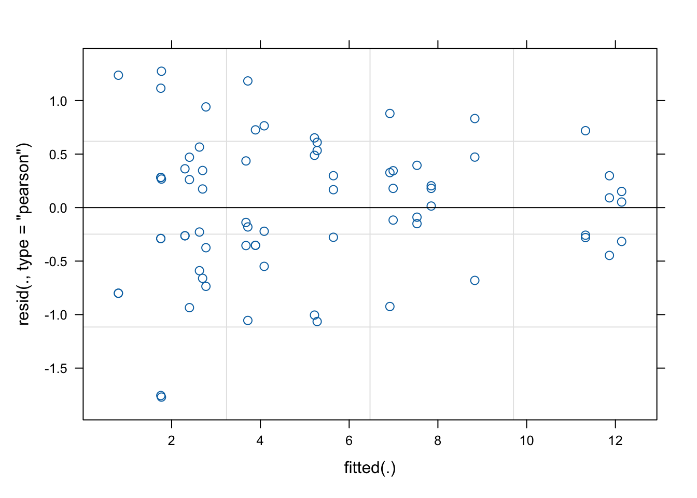
Let’s have a look at the random effects
x = ranef(fit)
qqnorm(x$Hive$`(Intercept)`)
qqline(x$Hive$`(Intercept)`)
shapiro.test(x$Hive$`(Intercept)`)
Shapiro-Wilk normality test
data: x$Hive$`(Intercept)`
W = 0.95543, p-value = 0.3537Looks good. Could also check with DHARMa.
simulateResiduals(fit, plot = T)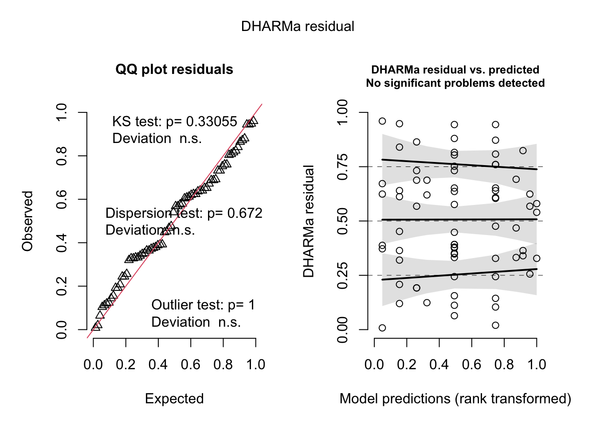
Object of Class DHARMa with simulated residuals based on 250 simulations with refit = FALSE . See ?DHARMa::simulateResiduals for help.
Scaled residual values: 0.388 0.672 0.372 0.624 0.96 0.008 0.688 0.192 0.568 0.364 0.32 0.84 0.948 0.208 0.12 0.864 0.732 0.192 0.02 0.944 ...Finally, the residuals per hive (a check for hive-specific patterns):
plot(fit,
resid(., scaled=TRUE) ~ fitted(.) | Hive,
abline = 0)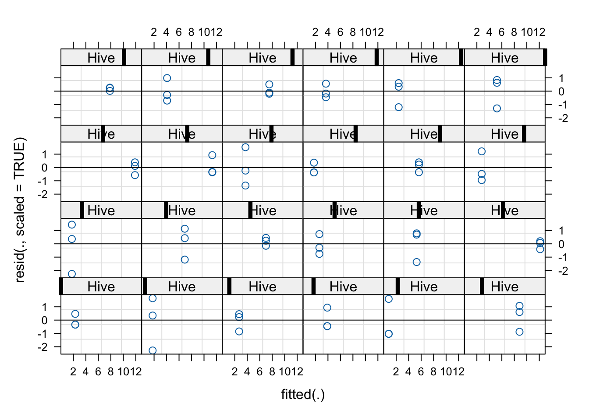
The GPA (college grade point average) data is a longitudinal data set (also named panel data, German: “Längsschnittstudie”. A study repeated at several different moments in time, compared to a cross-sectional study (German: “Querschnittstudie”) which has several participants at one time). In this data set, 200 college students and their GPA have been followed 6 consecutive semesters. Look at the GPA data set, which can be found in the EcoData package:
library(EcoData)
str(gpa)In this data set, there are GPA measures on 6 consecutive occasions, with a job status variable (how many hours worked) for the same 6 occasions. The response is the college gpa. There are two student-level explanatory variables: the sex (male / female) and the high school GPA (highgpa). There is also a dichotomous student-level outcome variable, which indicates whether a student has been admitted to the university of their choice. Since not every student applies to a university, this variable has many missing values. Each student has an id; year (1-3) and semester (1-2) together define the six occasions.